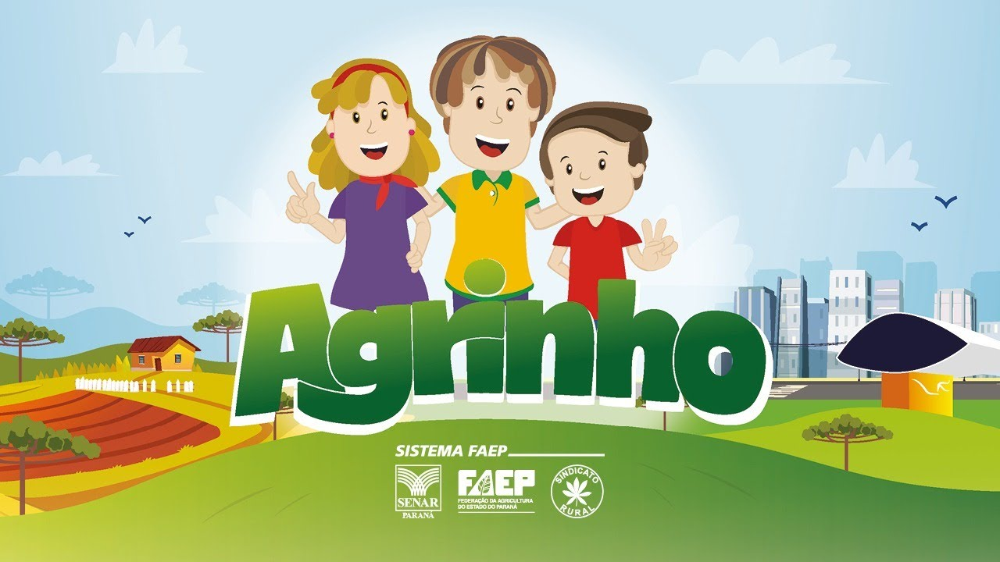
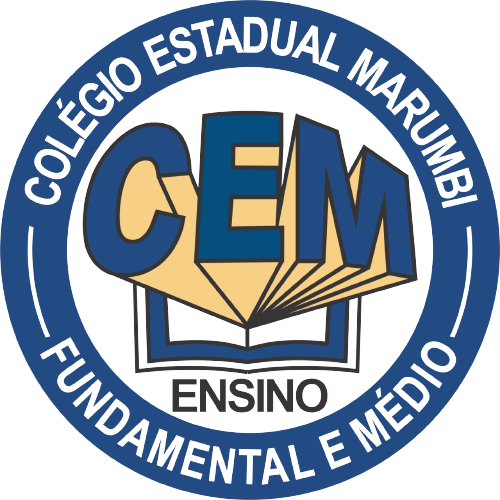

AGRINHO PROGAMAÇÃO - COLÉGIO ESTADUAL MARUMBI

Neste site você encontra os projetos feitos pelos estudantes do 1 ano do ensino médio do colégio cem.
No Colégio Estadual Marumbi, os alunos do 1 ano "A", desenvolveram projetos de javascript,css,html e p5js
Para conferir os projetos dos alunos, acesse:
Sammuel Melhado
Maycon Cristopher
Rhenan Daldoso
Kauan Damasceno
Os projetos dos alunos do colégio CEM foram bastante difíceis de serem criados, mais com ajuda do professor Leonardo Segantim, os estudantes conseguiram realizar e concluir seus projetos para o concurso agrinho 2022 de programação.